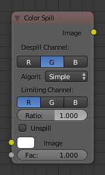

色彩溢出节点¶

色彩溢出节点。
色彩溢出 节点通过减少RGB色彩通道中的一种，使之不超过另外两种颜色产生色彩偏差溢出。
通常在进行蓝色或绿色幕布的抠像合成时遇到的比较普遍。在这种情况下，前景物体会有一定的反光，表明带有蓝色或绿色。这种颜色就称之为色彩“溢出”到了前景物体。如果背景的边缘比较浅，前景角色穿着白色衣服，这样会有部分蓝色或绿色从背景上“溢出”到前景角色身上，使表面产生沾染蓝色或绿色。若要清除这些蓝色或绿色，需要使用这个神奇的色彩溢出节点。
输入¶
- 图像
- 标准化图像输入。
- 系数
- 标准化系数。
属性¶
- 非溢出通道
- R（红）, G（绿）, B（蓝）通道
- 算法
- 简单型，平均
- 限定通道
- R（红）, G（绿）, B（蓝）通道
- 比率
- 以值限定缩放
- 移除色溢
这个节点通过减少图像上指定的通道溢出的颜色，使之和另外两种颜色通道相匹配。此节点在遇到大量颜色溢出时是非常有效的处理手段。
R（红）, G（绿）, B（蓝）通道
输出¶
- 图像
- 输出带有正确通道的图像。